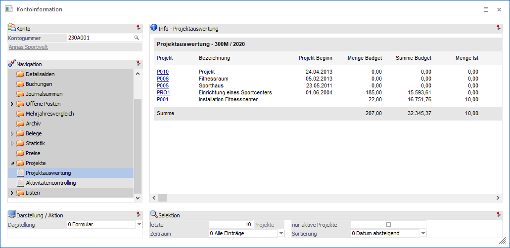
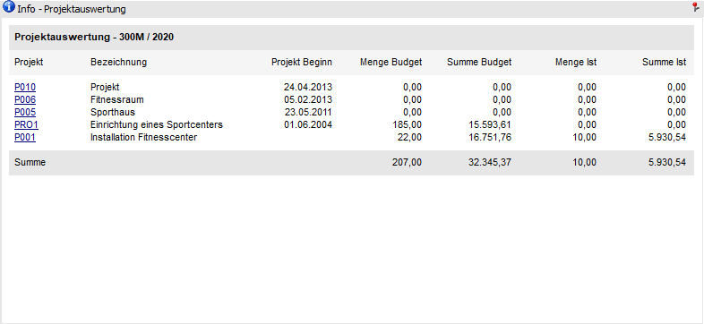
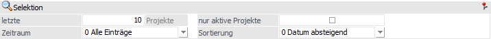
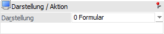

In dieser Ansicht werden alle Projekte des Kontos aufgelistet.

Die Ansicht "Projektauswertung" besteht aus den folgenden Info-Elementen:
ü Info - Projektauswertung
ü Selektion
Info - Projekterfassung

An dieser Stelle werden die Projekte, gemäß der nachfolgenden Sortierung, dargestellt.
Selektion

Für die Darstellung der Anzeige stehen folgende Punkte zur Verfügung, wobei alle getroffenen Einstellungen benutzerspezifisch gespeichert werden:
Ø letzte x Projekte
An dieser Stelle kann definiert werden, wie viele Projekte des Kontos maximal angezeigt werden sollen.
Ø Zeitraum
Über die Auswahlbox kann bestimmt werden, aus welchem Zeitraum die Projekte stammen sollen. Hierbei wird auf das Feld "Beginn" aus dem Projektestamm zugegriffen. Folgende Einstellungsmöglichkeiten stehen dabei zur Verfügung:
ü 0 - Alle Einträge
ü 1 - das letzte Jahr
ü 2 - das letzte Halbjahr
ü 3 - das letzte Quartal
ü 4 - der letzte Monat
ü 5 - die letzte Woche
ü 6 - heute
Ø nur aktive Projekte
Durch Aktivierung der Option werden nur die Projekte angezeigt, welche noch nicht auf inaktiv gesetzt wurden.
Ø Sortierung
An dieser Stelle kann gewählt werden, wie nach dem Beginn-Datum sortiert werden soll. Folgende Optionen stehen dabei zur Verfügung:
ü 0 - Datum absteigend
ü 1 - Datum aufsteigend
Darstellung / Aktion

Ø Darstellung
An dieser Stelle kann mit Hilfe einer Auswahlliste gewählt werden, ob die Darstellung der Projekte in Form eines Formulars oder einer Tabelle erfolgen soll.